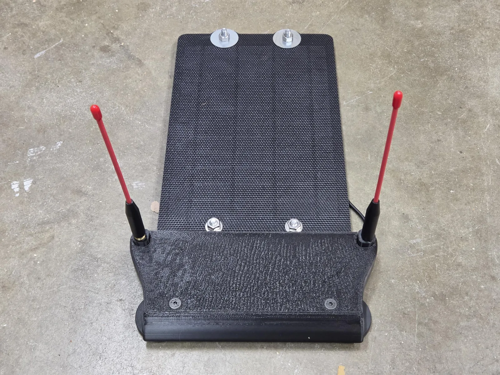
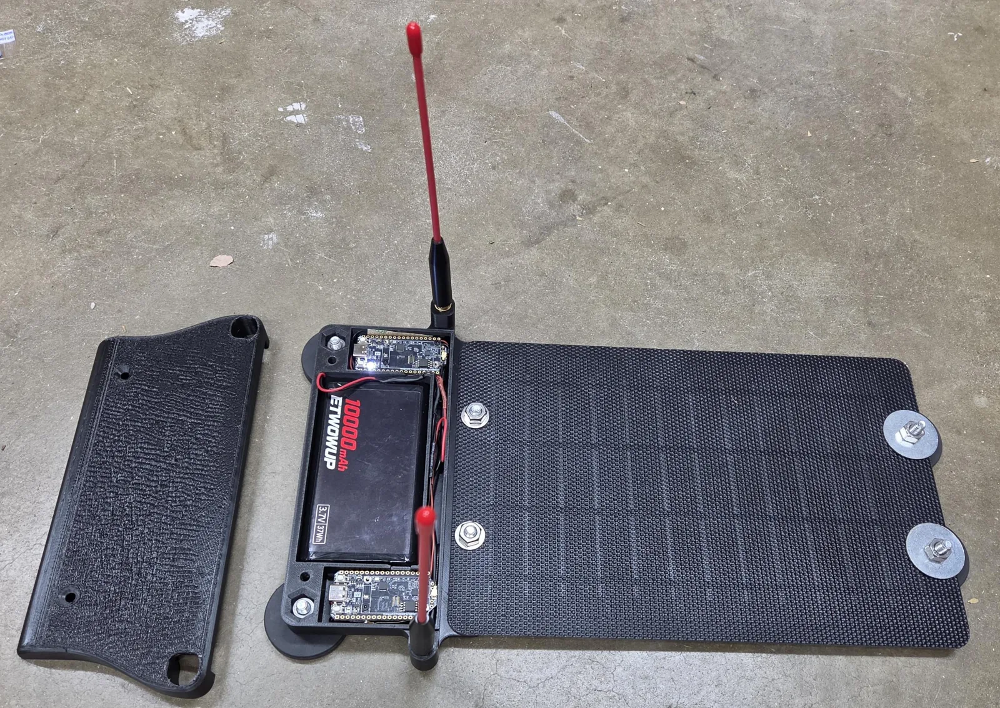
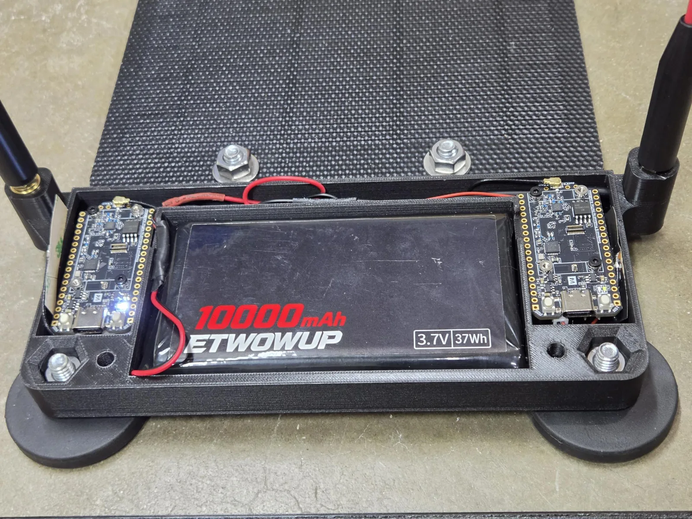
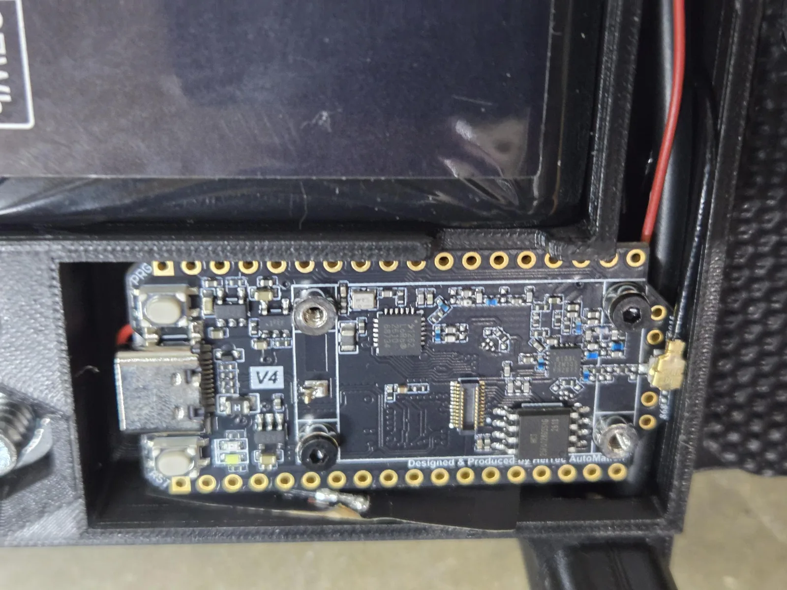

PART 1 · BASE
MeshCrossway-car-dual-solar-base.stl
About 209 × 100 × 26 mm · 4.4 MB
Download base STLA low-profile, magnetic mount that carries one Meshtastic radio and one MeshCore radio on the car roof, powered by a shared 10,000 mAh battery and topped up by a small solar panel. Your phone runs MeshCrossway inside the car and connects to both radios over Bluetooth.






Two parts: a base that holds the radios, battery and panel, and a textured cover with antenna openings.
About 209 × 100 × 26 mm · 4.4 MB
Download base STLAbout 215 × 95 × 19 mm · 1.7 MB
Download cover STLFiles and assembly notes are also in the GitHub repository. Free to print for personal, noncommercial use under the repository’s license. Please do not resell the files or the printed parts. Share your build or improvements in GitHub feedback.